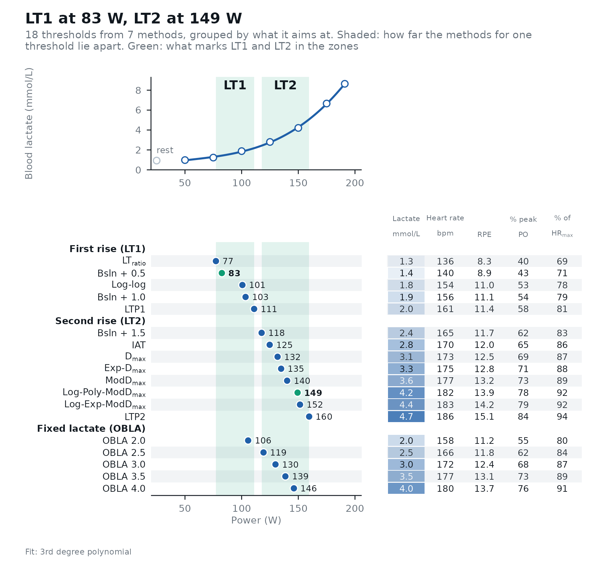
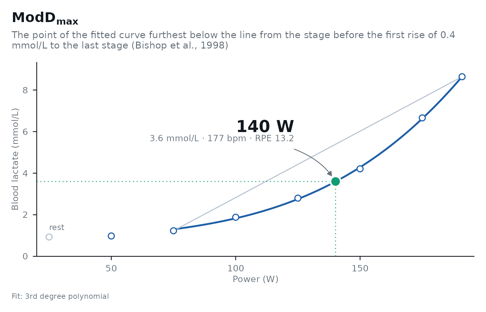
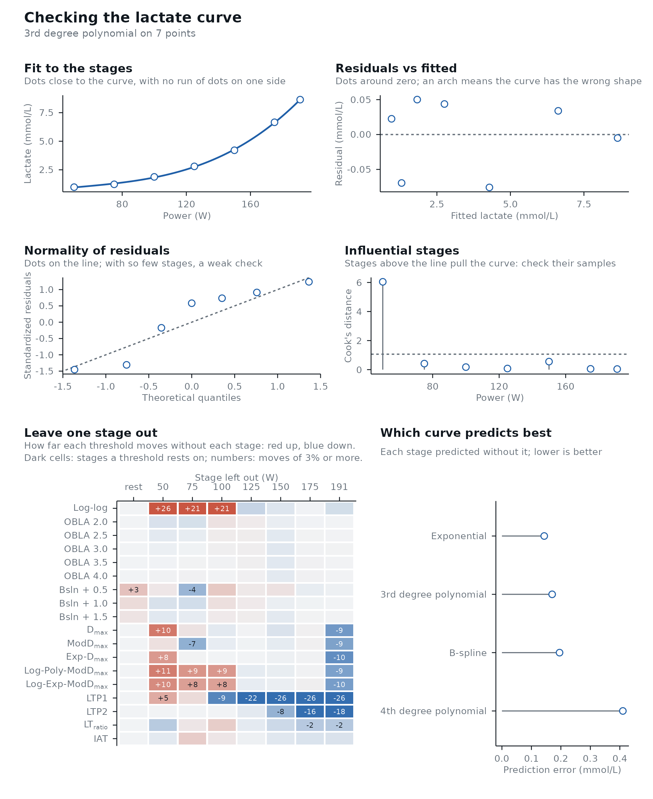
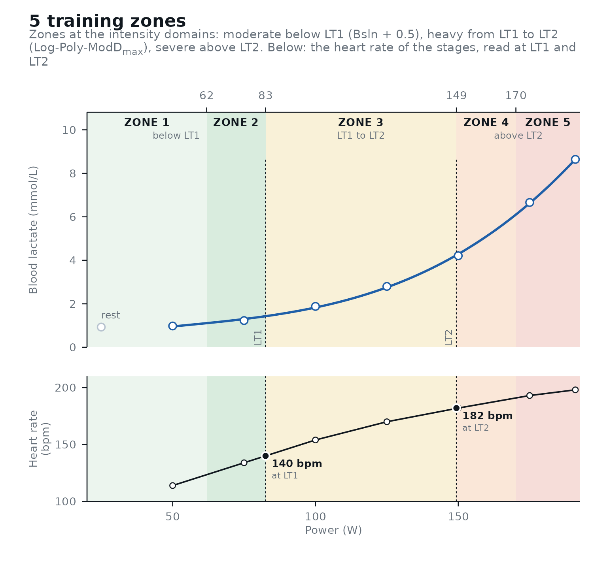

lactater turns the stages of a step test into lactate thresholds, checks them, and puts them to use. Find what you want to do, and the function that does it:
| You want to | Use | Read more |
|---|---|---|
| Before the test | ||
| Record every test the same way | The web form, read_recording(), recording_sheet() |
Best practices |
| Analyze it | ||
| Estimate every threshold | lactate_threshold() |
The methods and the evidence |
| See how the methods agree | autoplot() |
|
| Check the data and the curve | lactate_checks(), lactate_diagnostics() |
Checking the analysis |
| Know how sure each threshold is | ci = TRUE |
Checking the analysis |
| Use it | ||
| Build three or five training zones | lactate_zones() |
Training zones |
| Count the training in each zone | training_load() |
Training load |
| Predict race performance | predict_performance(), calibrate_performance() |
Predicting performance |
| Compare two tests, or follow a series | compare_tests(), curve_shape(), lactate_trend() |
Comparing tests |
| Compare with the population of the same age and sex | reference_percentiles() |
Comparing tests |
| Share it | ||
| Report the test to an athlete or a coach | test_report() |
|
| A table for a paper | lactate_report() |
|
Your data
One row per stage of a step test: the intensity (power in W, or speed), the lactate measured at the end of the stage and, if you have them, the heart rate and the rating of perceived exertion (RPE). A resting sample, if you took one, is the row with intensity 0.
demo_data
#> # A tibble: 8 × 6
#> step length intensity lactate heart_rate rpe
#> <int> <int> <int> <dbl> <int> <int>
#> 1 0 0 0 0.93 96 6
#> 2 1 3 50 0.98 114 7
#> 3 2 3 75 1.23 134 8
#> 4 3 3 100 1.88 154 11
#> 5 4 3 125 2.8 170 12
#> 6 5 3 150 4.21 182 14
#> 7 6 3 175 6.66 193 17
#> 8 7 2 191 8.64 198 19Your own test comes in with read.csv("test.csv") in
those columns, or with read_recording() from the .xlsx of
the web
form. Rows with a missing lactate (a missed sample) are dropped with
a warning. If the last stage was not completed, give the minutes
completed in last_stage_duration (with
stage_duration) and its intensity is time-weighted for you:
2 of 3 min at 200 W after 175 W count as 191.7 W (demo_data
already has its 2-min last stage at 191 W).
read_recording() does the same from the form’s time in the
last stage. Or leave the stage out with max_intensity. How
to collect data that does the methods justice is in Best
practices for a step test.
Estimate the thresholds
results <- lactate_threshold(
demo_data,
intensity_column = intensity,
lactate_column = lactate,
heart_rate_column = heart_rate,
rpe_column = rpe,
plot = FALSE
)
results
#> # Lactate thresholds: cycling, 3rd degree polynomial, 7 stages + rest
#> # LT1: 83 W (Bsln + 0.5)
#> # LT2: 149 W (Log-Poly-ModDmax)
#> method_category method fitting intensity lactate heart_rate rpe
#> <fct> <fct> <chr> <dbl> <dbl> <dbl> <dbl>
#> 1 Log-log Log-log 3rd degr… 101 1.8 154 11
#> 2 OBLA OBLA 2.0 3rd degr… 106 2 158 11.2
#> 3 OBLA OBLA 2.5 3rd degr… 119 2.5 166 11.8
#> 4 OBLA OBLA 3.0 3rd degr… 130 3 172 12.4
#> 5 OBLA OBLA 3.5 3rd degr… 139 3.5 177 13.1
#> 6 OBLA OBLA 4.0 3rd degr… 146 4 180 13.7
#> 7 Bsln+ Bsln + 0.5 3rd degr… 83 1.4 140 8.9
#> 8 Bsln+ Bsln + 1.0 3rd degr… 103 1.9 156 11.1
#> 9 Bsln+ Bsln + 1.5 3rd degr… 118 2.4 165 11.7
#> 10 Dmax Dmax 3rd degr… 132 3.1 173 12.5
#> 11 Dmax ModDmax 3rd degr… 140 3.6 177 13.2
#> 12 Dmax Exp-Dmax Exponent… 135 3.3 175 12.8
#> 13 Dmax Log-Poly-ModDmax 3rd degr… 149 4.2 182 13.9
#> 14 Dmax Log-Exp-ModDmax Exponent… 152 4.4 183 14.2
#> 15 LTP LTP1 3rd degr… 111 2 161 11.4
#> 16 LTP LTP2 3rd degr… 160 4.7 186 15.1
#> 17 LTratio LTratio B-Spline… 77 1.3 136 8.3
#> 18 IAT IAT B-Spline… 125 2.8 170 12The column arguments can also go by position, as in the calls below:
lactate_threshold(demo_data, intensity, lactate, heart_rate).
Every method runs by default; pick some with method,
e.g. method = c("Dmax", "LTP"), and set sport
for running, swimming or rowing. rpe_column gives the RPE
at each threshold (add rpe_scale = "CR10" for the 0-10
scale; the RPE of demo_data is simulated).
Two of these thresholds are what training needs. LT1 is the first
rise of lactate above resting values, the top of the moderate intensity
domain; LT2 is the second, abrupt rise, the top of the heavy domain. The
methods aim at one of them or at a fixed lactate value, the three
categories of Faude et
al. (2009): the first rise (Log-log, Bsln + 0.5 and 1.0,
LTratio, LTP1), the second rise or the maximal lactate steady
state (Bsln + 1.5, the Dmax family, LTP2, IAT, Stegmann, and
Keul and Simon for running), and fixed values (OBLA).
autoplot() groups them this way, and The
methods and the evidence says which to trust. A threshold is
NA when its method found nothing in the tested range: the
Log-log lines crossing outside the stages, a Dmax curve never
below its line, LTP2 in a test that stopped early.
lactate_checks() names them and says what to do.
Look at them
The overview puts every threshold on the same intensity axis as the curve, one row per method, with a table of the values at each threshold:
autoplot(results)
Or look at one method in detail:
autoplot(results, method = "ModDmax")
Check the analysis
lactate_checks() flags what is easy to miss in a table
of numbers, and lactate_diagnostics() checks the fitted
curve and how much each threshold rests on single stages:
lactate_checks(results)
#> 10 checks: 9 passed, 1 note, 0 warnings
#> ℹ Stages 7 stages: the LTP fit has 6 parameters, so 1 degree of freedom is left and LTP can move a lot with one stage (at least 8 stages are better); the fitted curves rest on few points too.
#> ✔ Resting sample Present.
#> ✔ Thresholds found All thresholds were found.
#> ✔ Edge of the range No threshold sits at the first or last stage.
#> ✔ Early lactate dip No early dip.
#> ✔ Final stage Lactate rose in the last stage.
#> ✔ Peak lactate 8.6 mmol/L.
#> ✔ Sample type blood lactate.
#> ✔ LT1 Within 18% of peak (5 methods, LTratio 77 to LTP1 111).
#> ✔ LT2 Within 22% of peak (8 methods, Bsln + 1.5 118 to LTP2 160).
diagnostics <- lactate_diagnostics(results)
diagnostics
#> Lactate curve: 3rd degree polynomial on 7 points; residual SD 0.07 mmol/L.
#> Influential stage(s): 50 W (Cook's distance 6.05).
#> Most sensitive to single stages: LTP1 (jackknife SE 31 W), Log-log (jackknife SE 29 W), LTP2 (jackknife SE 18 W).
#> Best-predicting curve: Exponential, which missed each stage by 0.14 mmol/L on average when fitted without it (root-mean-square leave-one-out error).
autoplot(diagnostics)
How sure are we?
With 6 to 10 stages, a threshold reported to 0.1 W is false
precision. ci = TRUE adds bootstrap confidence intervals
(this takes a few seconds; use more replicates than this for real
work):
set.seed(2024)
with_ci <- demo_data |>
lactate_threshold(
intensity, lactate, heart_rate,
method = c("OBLA", "Dmax", "LTP"), plot = FALSE, ci = TRUE, n_boot = 200
)
with_ci |>
select(method, intensity, intensity_low, intensity_high)
#> Warning: Unknown or uninitialised column: `method_category`.
#> # Lactate thresholds: cycling, 3rd degree polynomial, 7 stages + rest
#> # LT2: 149 W (Log-Poly-ModDmax)
#> method intensity intensity_low intensity_high
#> <fct> <dbl> <dbl> <dbl>
#> 1 OBLA 2.0 106 100 110
#> 2 OBLA 2.5 119 116 123
#> 3 OBLA 3.0 130 127 133
#> 4 OBLA 3.5 139 136 141
#> 5 OBLA 4.0 146 143 149
#> 6 Dmax 132 124 138
#> 7 ModDmax 140 132 151
#> 8 Exp-Dmax 135 133 137
#> 9 Log-Poly-ModDmax 149 146 161
#> 10 Log-Exp-ModDmax 152 150 162
#> 11 LTP1 111 75 123
#> 12 LTP2 160 140 171Training zones
By default LT1 is Bsln + 0.5 and LT2 Log-Poly-ModDmax, the
pair with the best evidence for each boundary (Training
zones says why); choose others with lt1 and
lt2, and three or five zones with model:
zones <- lactate_zones(results, model = 5)
zones
#> # A tibble: 5 × 11
#> zone domain description intensity_from intensity_to lactate_from lactate_to
#> <chr> <chr> <chr> <dbl> <dbl> <dbl> <dbl>
#> 1 Zone 1 modera… below LT1 NA 62 NA 1.1
#> 2 Zone 2 modera… below LT1 62 83 1.1 1.4
#> 3 Zone 3 heavy LT1 to LT2 83 149 1.4 4.2
#> 4 Zone 4 severe above LT2 149 170 4.2 6.1
#> 5 Zone 5 severe above LT2 170 NA 6.1 NA
#> # ℹ 4 more variables: heart_rate_from <dbl>, heart_rate_to <dbl>,
#> # rpe_from <dbl>, rpe_to <dbl>
autoplot(zones)
A table for your report
lactate_report(results)| Lactate thresholds | ||||
| Cycling · 3rd degree polynomial fit · 7 stages + rest | ||||
| Method | Intensity (W) | Lactate (mmol/L) | Heart rate (bpm) | RPE (6-20) |
|---|---|---|---|---|
| Log-log | ||||
| Log-log | 101 | 1.8 | 154 | 11.0 |
| OBLA | ||||
| OBLA 2.0 | 106 | 2.0 | 158 | 11.2 |
| OBLA 2.5 | 119 | 2.5 | 166 | 11.8 |
| OBLA 3.0 | 130 | 3.0 | 172 | 12.4 |
| OBLA 3.5 | 139 | 3.5 | 177 | 13.1 |
| OBLA 4.0 | 146 | 4.0 | 180 | 13.7 |
| Bsln+ | ||||
| Bsln + 0.5 | 83 | 1.4 | 140 | 8.9 |
| Bsln + 1.0 | 103 | 1.9 | 156 | 11.1 |
| Bsln + 1.5 | 118 | 2.4 | 165 | 11.7 |
| Dmax | ||||
| Dmax | 132 | 3.1 | 173 | 12.5 |
| ModDmax | 140 | 3.6 | 177 | 13.2 |
| Exp-Dmax | 135 | 3.3 | 175 | 12.8 |
| Log-Poly-ModDmax | 149 | 4.2 | 182 | 13.9 |
| Log-Exp-ModDmax | 152 | 4.4 | 183 | 14.2 |
| LTP | ||||
| LTP1 | 111 | 2.0 | 161 | 11.4 |
| LTP2 | 160 | 4.7 | 186 | 15.1 |
| LTratio | ||||
| LTratio | 77 | 1.3 | 136 | 8.3 |
| IAT | ||||
| IAT | 125 | 2.8 | 170 | 12.0 |
| ℹ Stages: 7 stages: the LTP fit has 6 parameters, so 1 degree of freedom is left and LTP can move a lot with one stage (at least 8 stages are better); the fitted curves rest on few points too. | ||||
| Made with lactater | ||||
For the athlete or the coach, test_report() writes the
whole test as one web page (and PDF): their details, LT1 and LT2, the
zones, every threshold, the predicted performance, the checks and the
stages (see a
cyclist and a
runner). Give it two to five tests of one athlete and their
dates, and it reports the progress over them (see
an example).
Many tests at once
Use .by with the columns that identify each test.
lactate_tests holds 16 tests across sports and fitness
levels; here, the six tests of one cyclist:
lactate_tests |>
filter(athlete == "cyclist_series") |>
lactate_threshold(intensity, lactate, method = "Dmax", dmax_methods = "ModDmax", plot = FALSE, .by = "day")
#> # A tibble: 6 × 6
#> day method_category method fitting intensity lactate
#> <int> <fct> <fct> <chr> <dbl> <dbl>
#> 1 0 Dmax ModDmax 3rd degree polynomial (defaul… 290 2.3
#> 2 58 Dmax ModDmax 3rd degree polynomial (defaul… 327 2.9
#> 3 163 Dmax ModDmax 3rd degree polynomial (defaul… 328 3.1
#> 4 1107 Dmax ModDmax 3rd degree polynomial (defaul… 270 3
#> 5 1865 Dmax ModDmax 3rd degree polynomial (defaul… 325 2.5
#> 6 2046 Dmax ModDmax 3rd degree polynomial (defaul… 364 4Learn more
- Best practices for a step test: how to run a test, as a checklist with sources.
- The methods and the evidence: how each method is defined and what the evidence says.
- Checking the analysis: checks, regression diagnostics, and bootstrap intervals.
- Training zones: choosing LT1 and LT2, three and five zones.
- Training load: time in zone and intensity distribution.
- Comparing tests: is a change real, did the curve shift or change shape, and trends.
- Predicting performance: race times from a step test, how sure they are, and your own equation.
- Beyond the step test: the maximal lactate steady state from constant-load bouts, and the maximal lactate accumulation rate (V̇Lamax) from a sprint test.
- The example data: 16 tests across sports.